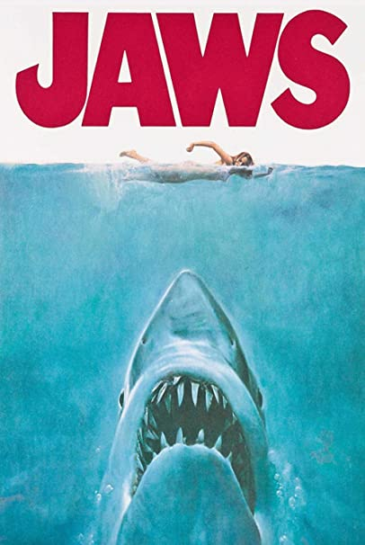
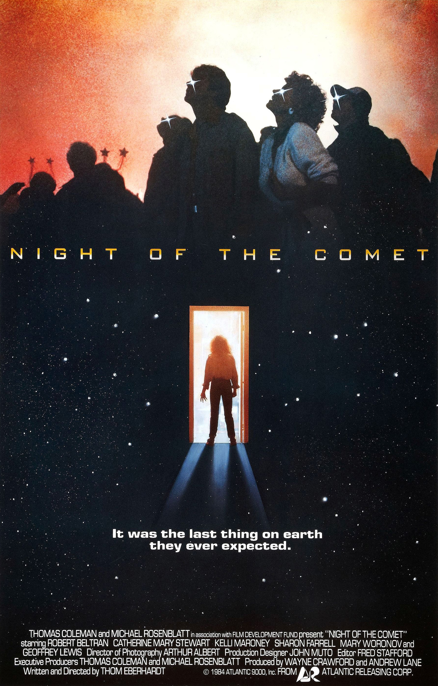
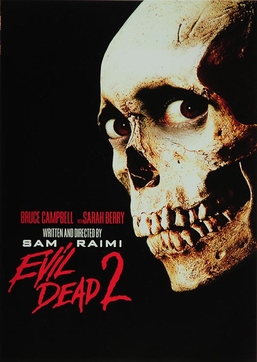

I feel extremely lucky that my parents never shielded us from horror movies. In fact, horror movies were always a part of our household. They did always make sure we understood it was fake. The first horror movie I remember was The Exorcist or Jaws and I was probably 6 or 7. Jaws and The Exorcist loom huge in my childhood memories.
There are in no particular order:
|  | |
|
|
|
| Jaws | Dawn of The Dead | The Exorcist | Doctor Sleep | Zombieland |
 |
 |  |
 | |
| The Thing | Night of The Comet | Host | Hellhouse LLC | Evil Dead II |
Zombies (OH how I love anything to do with zombies)
I had to pick 4:

The most memorable is watching Rocky Horror Picture Show as a child and the crowd participation blew my little mind. Rice flying through the air, decks of cards being thrown? Was that a hot dog?! As an adult seeing Jaws on the big while enjoying adult refreshments and buttery salty popcorn with my bestie.